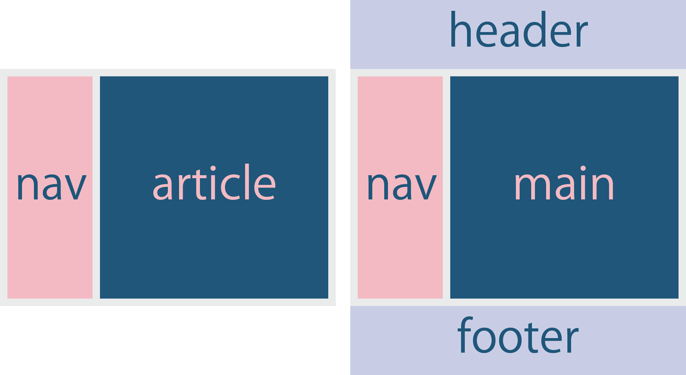

はじめに
Progress Navは hakimelさんというスウェーデンのUIデザイナー/ディベロッパーの方が制作した、現在表示されている場所を目次でハイライトしてくれるツールです。
まずはこちらのツールを制作してくださったhakimelさんに感謝です。
元のコードなどは目次下記のGitHubのリンク先でダウンロードできます。
今回はより手軽に使い回せるように、私なりにカスタマイズしました。簡単な使い方も説明していますので、よかったら活用してみてください。
注意点：idは必ずhタグなどではなく、sectionタグやdivタグに付けてください。hタグにつけると、hタグが画面外に行ったときにハイライトが消えてしまい、どこを読んでいるかユーザーを困惑させてしまいます。
本家からの主な変更点
| 変更前（本家） | 変更後 |
|---|---|
| nav{position:fixed}でarticle部分をpadding-leftでnav分あけて構成 | navのfixedを消してnavとmainでflex構成 |
| nav（目次）とarticle（本文） | navとmainにしてheaderとfooterを追加 |
| レスポンシブなし | レスポンシブでハンバーガーメニュー化 |

class名もシンプルなものにしました。
カスタマイズしやすいよう、CSSはレイアウトが崩れない程度に削りました。
フォントサイズやline-heightなどは適宜お好みで設定ください。
スマホ横でもハイライト機能が見られるよう、ブレイクポイントを560pxにしました。
The rest of the content below is taken from slides.com/developers. Take a look at that to see how the progress nav looks on a real page.
Created by Hakim El Hattab | hakim.se | @hakimel
Slides for Developers
We strive to make Slides a great and flexible tool for developers. Presentations created on Slides are HTML documents under the hood, so generally anything that HTML can do, Slides can do. We make it easy to access and edit the underlying HTML and CSS through the Developer Mode.
There's also an API for creating new presentations with preset content and we're aiming to add additional APIs in the future.
Developer Mode
The Slides editor has a developer mode which is useful if you know a bit of HTML and CSS. With this mode active you will be able to modify the underlying HTML of your deck, allowing you to make adjustments that the Slides editor does not provide interface options for.
To enable the developer mode open the editor settings in the bottom left corner:
Developer Mode
The Slides editor has a developer mode which is useful if you know a bit of HTML and CSS. With this mode active you will be able to modify the underlying HTML of your deck, allowing you to make adjustments that the Slides editor does not provide interface options for.
The Slides editor has a developer mode which is useful if you know a bit of HTML and CSS. With this mode active you will be able to modify the underlying HTML of your deck, allowing you to make adjustments that the Slides editor does not provide interface options for.
The Slides editor has a developer mode which is useful if you know a bit of HTML and CSS. With this mode active you will be able to modify the underlying HTML of your deck, allowing you to make adjustments that the Slides editor does not provide interface options for.
The Slides editor has a developer mode which is useful if you know a bit of HTML and CSS. With this mode active you will be able to modify the underlying HTML of your deck, allowing you to make adjustments that the Slides editor does not provide interface options for.
To enable the developer mode open the editor settings in the bottom left corner:
Developer Mode
The Slides editor has a developer mode which is useful if you know a bit of HTML and CSS. With this mode active you will be able to modify the underlying HTML of your deck, allowing you to make adjustments that the Slides editor does not provide interface options for.
To enable the developer mode open the editor settings in the bottom left corner: